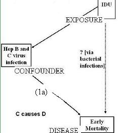
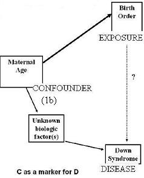
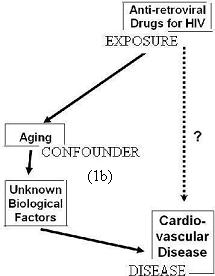
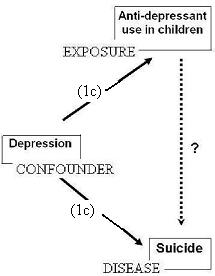
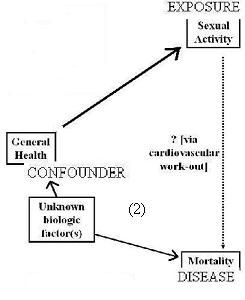

Properties of a Confounder - Association with Disease
Lead Author(s): Jeff Martin, MD
Refined Properties of a True Confounder - Association with Disease
When we say the confounder has to be "associated with the disease" - what do we mean?
A confounding variable can be either:
(1) A "cause" or "marker" of the disease (arrow pointing from the confounder to the disease):
(a) Cause of the disease (arrow pointing from the confounder to the disease)
(b) Marker for the disease (arrow pointing from the confounder through other factors to disease)
(c) Cause of the disease and the exposure (one arrow from the confounder to disease and another arrow from confounder to exposure)
(2) Associated in a non-causal manner with the disease (double-headed arrow from the confounder to the disease)
Confounder Causes the Disease
DAG Confounder Causes the Disease

Given the research question: Is injection drug use associated with survival independent of effect on hepatitis infections?
Consider the diagram above where we are looking at the causal relationship between the confounder and the outcome.
Here, the research question is whether injection drug is associated with survival independent of the effect on causing hepatitis infections.
- We might perhaps hypothesize an effect of IDU on survival working through an increased frequency of bacterial infections.
- To determine this, we wish to know if this is independent of hepatitis B and C virus infection which by themselves can cause cirrhosis and early death.
- This is an example where the potential confounder causes the outcome (C causes D).
Confounder as a Marker of the Disease
DAG Showing Confounder as a Marker of the Disease

Given the research question: Is birth order associated with Down Syndrome independent of maternal age?
Consider the diagram above.
In the past, there has been a question about whether birth order is associated with Down syndrome.
- Of course, we need to take into maternal age before considering an independent role for birth order.
- This is because maternal age is associated with birth order and we also know it is a strong risk factor for Down Syndrome.
But age per se is just a statement about passage of time and it itself is not the cause of Down Syndrome.
- The accumulation of time, or age, is undoubtedly associated with some biologic factor that is the cause of Down Syndrome.
- We don't know yet what this specific biologic factor is, but to ignore age as a potential confounder in the relationship between birth order and Down Syndrome would be a terrible mistake.
NOTE: Some textbooks are adamant about a factor must be a cause of the outcome to be a confounder; don't get too hung up on what exactly a cause is.
Second DAG Showing Confounder as Marker of Disease
Given the research question: Is anti-retroviral drugs for HIV associated with cardio-vascular disease?

One thing that the new antiretroviral agents do is to prolong survival, ie people live longer.
- But with longer life comes increased risk for many diseases, including cardiovascular disease.
- This again illustrates how age is powerful confounding factor for many situations.
Confounder Causes the Disease and the Exposure
DAG Showing Confounder Causes the Disease and the Exposure

Given the reserach question: Is anti-depressant use in children associated with suicide independent of depression?
As you can see in the diagram below this is easy relationship to visualize.
Typically, such kids suffer from depression (confounder):
- A causal factor in suicide (disease) and
- Treated with anti-depressants (exposure).
Confounder Associated with Disease in a Non-causal Manner
DAG Showing Confounder Associated with Disease in a Non-causal Manner

Given the research question: Is sexual activity associated with survival independent of general health?
Consider the diagram above on the non-causal relationship between the confounder and the disease.
Here, it looks like the confounder is "general health" that we might measure, for example, on a quality of life survey.
- Yet, the real factor to consider is unknown biological factors that causes both good general health and an impact on mortality.
This is a bit of a semantical issue.
- Most texts do not use this double-headed arrow when describing the possible relationship between the confounder and the disease
- but in many cases the "confounder" is just a marker for the real biologic factor that is associated with the disease.
Sometimes people get confused by this and don't consider factors that are markers for true causes to be potential confounders.